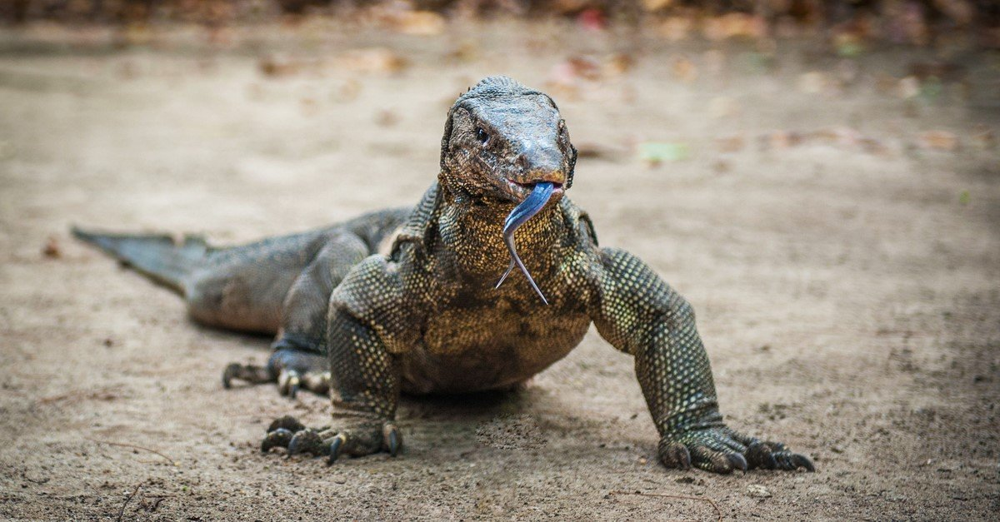
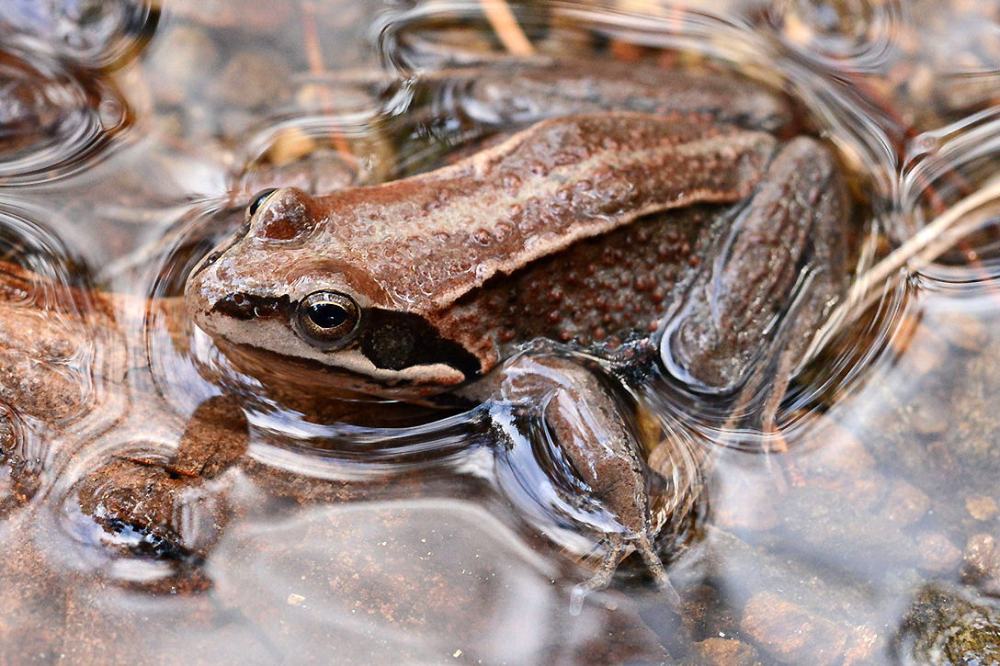
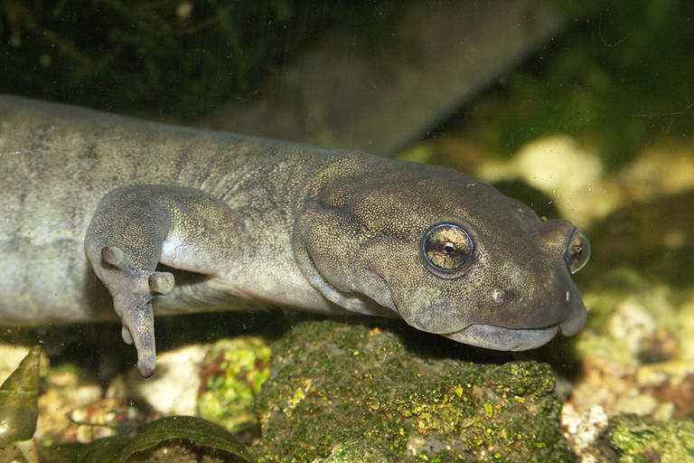

Amphibians
Grey monitor lizard

The Central Asian grey monitor lizard is one of the subspecies of the grey monitor lizard. The largest
lizard of the fauna of Central Asia.
The largest subspecies of the gray monitor lizard. Large individuals can reach a length of 1.5 m (of
which about 60 cm falls on the body length and 90 cm on the tail) and weights up to 3-3.5 kg. But
most adult monitor lizards are significantly smaller. Males are usually longer than females (the largest
male from Turkmenistan, included in the sample in 1981, had a length of 58.5 cm without tail, and
the largest female reached only 46 cm in length without tail), but not much heavier than them (the
heaviest male weighed in this sample had a weight of 2,850 g, while the female - 2,700 g)
The Central Asian grey monitor lizard is widespread in Central Asia, Azerbaijan, Pakistan, Turkey, Iran
and Afghanistan. The northern border of the range reaches the coast of the Aral Sea and the southern
chinks of Ustyurt and generally coincides with the border of the southern deserts. In the west, the area
is limited to the coast of the Caspian Sea. In the east, along the Syr Darya Valley, the gray monitor
lizard penetrates into the Fergana Valley (where it is now extremely rare or disappeared), and along the
Amu Darya Valley, its range reaches southwestern Tajikistan
Siberian frog

The Siberian frog is a species of the family of true frogs.
The back is grayish or gray-brown with small dark spots. The belly is white or white-yellowish with large irregular partially
merged blood-red spots. Red spots may alternate with dark spots, and a red pattern on
the abdomen begins to form around the second year of life. Males differ from females
in the presence of a dark mating callus on the first finger. The head is moderately sharp. The
lower leg is 1.75—2.4 times shorter than the body. The fingers are connected by webbing.
The pupil is horizontal. The back of the tongue is free and forked.
This frog lives in western and eastern Siberia, the Far East of Russia, Korea, northern and central
Mongolia, and northeastern China. The population density over a large area reaches several hundred and thousands of individuals per
hectare. At the same time, in the northernmost and southernmost areas of the range, the species
forms dense but small groups in suitable places, and in this case the total number should be
considered low.
Semirechensk frog-tooth
The Semirechensk frog-tooth is a tailed amphibian from the family of anglerfish (Hynobiidae). The species is allocated to the monotypic genus frogtooth (Latin Ranodon). It is endemic to the Dzungarian Alatau (Central Asia). A very rare endangered species. It is listed in the IUCN Red List as an endangered species due to the reduction of its range to less than 500 km2, on which it is distributed extremely sporadically, the continuing decrease in the number of suitable habitats, the decrease in the number of subpopulations and the number of mature individuals. The total length of the body is 15-18 cm (up to 20 cm is indicated), of which the tail occupies a little more than half. Body weight about 20-25 g. There are 11-13 intercostal grooves on each side of the body. The tail is laterally compressed and has a well-developed fin fold on the dorsal side. The color ranges from yellowbrown to dark olive and greenish-gray, often spotted, varies depending on environmental conditions. It is distributed only in the mountains of the Dzungarian Alatau within southeastern Kazakhstan and northwestern China. It lives mainly in small mountain streams and springs, forming small lakes, with a rocky bottom, fast current and waterfalls.